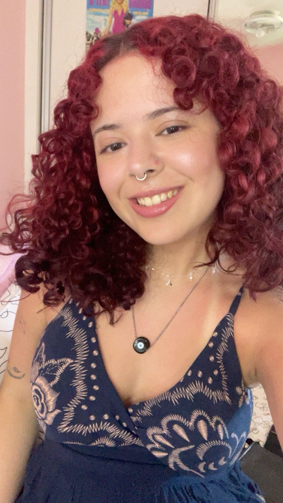

Oi! Eu sou a Débora Sigaud, estudante de Engenharia de Software e editora de vídeo apaixonada por motion graphics e edição criativa. Gosto especialmente de trabalhar com After Effects criando animações, motion typography, transições e composições visuais que trazem ritmo e identidade para um vídeo.
Hi! I'm Débora Sigaud, a Software Engineering student and video editor passionate about motion graphics and creative editing. I especially enjoy working with After Effects creating motion graphics, typography animation, transitions and compositions that bring rhythm and personality to a video.